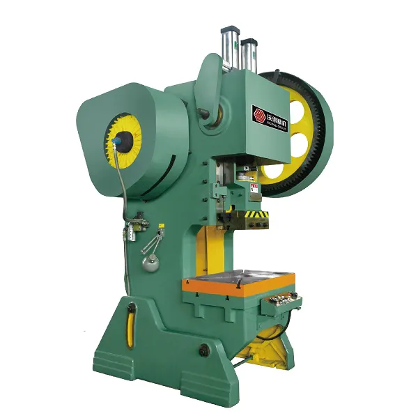

Pic niya ;)

Information about J23-25 Ton C Frame Inclinable Press Machine
The J23-25 Ton C Frame Inclinable Press Machine is a type of mechanical press used in manufacturing and metalworking. Here’s a breakdown of what this machine typically involves:
Key Features:
-
Capacity:
- 25 Ton: This indicates the maximum force the press can exert, which is 25 tons (or approximately 22.7 metric tonnes). The tonnage is a measure of the press's force capability.
-
C Frame Design:
- C Frame: The "C frame" refers to the machine’s frame shape, which is open on three sides. This design allows for easier access to the work area and is common in various types of presses.
-
Inclinable:
- Inclinable: This feature means the press can be tilted or adjusted at an angle, which can help in aligning the workpieces or improving ergonomics and accessibility for different operations.
Applications:
-
Stamping, Punching, Bending: These machines are often used for operations such as stamping, punching holes, bending metal sheets, and other metalworking tasks.
-
Tooling: It can accommodate various tooling and dies for different operations.
Construction:
- Heavy-Duty: Typically, these presses are built with robust construction to withstand high forces and continuous use.
Operation:
- Manual or Automated: Depending on the model, it might be operated manually or with automation systems to improve efficiency.
Advantages:
- Versatility: Suitable for a range of operations and materials.
- Durability: Designed to handle heavy loads and extended use.
- Accessibility: The open C-frame design allows for easy loading and unloading of workpieces.
Considerations:
- Space: Requires adequate space for operation and maintenance.
- Safety: Proper safety measures and training are essential due to the high forces involved.
- Maintenance: Regular maintenance is necessary to ensure optimal performance and longevity.
Example Use Cases:
- Automotive Industry: Used for stamping car parts.
- Electronics: Punching and shaping components.
- Construction: Bending and shaping metal parts for structures.
This type of machine is widely used in industrial settings where precision and strength are required for forming and shaping metal components.